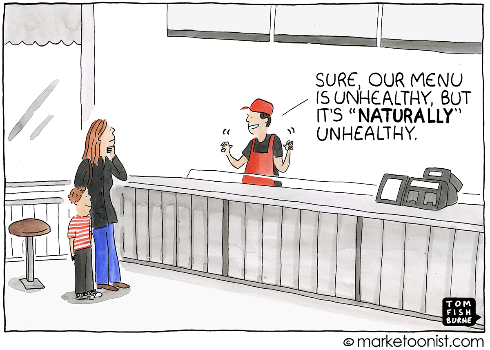

Feeding the Sharks: The unpalatable truth about healthy food
| 12 February, 2022This story was originally published in my fortnightly deep-dive newsletter, The Interval. You can read more about it here.
TLDR: The wildly popular show ‘Shark Tank India’ introduced us to an exciting array of startups promising to deliver delicious snacks, drinks and desserts that are good for us. But an assessment of their nutritional charts reveals how food marketeers use misleading labels to trick consumers. When shopping at the grocery store, the buyer truly has to beware. It’s a 15-minute read.
Sony Entertainment Television brought the global reality show Shark Tank to India in December 2021. Around 200 startups pitched to raise money from seven angel investors (“sharks”). I enjoyed watching the show — and I am still enjoying the hilarious show-based memes.
One thing stood out. 33 of the 117 televised pitches (~28%) were food and beverage companies, mostly selling packaged food: frozen momos, potato chips, lemonade premix, energy drinks, mead cocktails, peanut butter, plant protein, homemade pickles, traditional sweets, ice pops, ice creams, bacon jams, hemp products, jackfruit products, ayurvedic foods, and so on.
This is good news. Big Food shapes what we eat. The ten biggest food companies control 80% of store-bought products globally. So startups offering alternative and better products can introduce choice and competition in the seemingly concentrated market.
That’s what Shark Tank pitchers claimed. The nutritional profile of their products is healthier than the Big Food produce. The packaging proudly promotes their virtues: “sugar-free”, “preservative-free”, “all-natural”, “low-fat”, “no-carbs”, “high-protein”, “vegan”, “keto-friendly”, “plant-based” and so on.
Gosh. It was too much. These pitches had an uncanny resemblance to the marketing gimmicks mastered by food giants who sell sugar-laden candies as “healthy bars” just because they have some protein and vitamins you don’t need.
I learnt to spot these tricks while reporting a packaged food labelling story for Mint. And having immersed myself in the confusing and fascinating food and health literature, I feel fairly comfortable interpreting the nutritional labels on the back of the pack.
So that’s what I did for Shark Tank India startups. I picked a few companies, rewatched pitches, explored their products, and read labels.
What did I find? Some of them are simply following the Big Food playbook: they are profiting off from what we don’t know about food, exploiting the public’s anxiety about their diets and confusion around nutritional information to make ultra-processed junk food look healthier.

In today’s edition of The Interval, I dive into three categories of health claims made on Shark Tank India that are omnipresent in grocery stores. I am using these companies as examples to illustrate how marketers distort the truth about the food we eat.
Note: Even the most basic questions about food and health are widely contested and everything we know lasts until a new conflicting study appears whose findings are uncritically amplified by the media. It’s a mess. While I want to believe my framework to think about food is solid and sound enough to cut through the bullshit, I must acknowledge that food journalism is necessarily interpretative and skewed towards the writer’s food philosophy and the knowledge base they are exposed to.
So read what follows as my opinion, that is, how I perceive these so-called “healthy” products.
1. The unholy trinity: Salt, Sugar and Fat
‘TagZ’ was the second food startup in Season One of Shark Tank India. They sell “popped potato chips”.
The pitch: No Indian should feel the need to eat fried potato chips. The urban Gen Z snack brand ‘TagZ’ was born to solve that problem. Their chips are neither fried, nor baked. They are popped: use high temperature and pressure to reduce 50% fat content in potato chips.
Target market: “We are catering to a market that is not looking for absolute healthy items. It is for those who want freedom from fried chips but can’t resist. We are making products for them. And that market size is relatively quite big.”
TagZ got a deal from Ashneer Grover. He invested ₹70 lakhs for 2.75% equity in the company. Good for them. But I didn’t find their health claims good enough.
Context first: There is no scientific definition of “junk food” but they are generally understood as foods high in Salt, Sugar and Fat — the unholy trinity of the processed food industry. They thrive on these ingredients. The trio makes the food tastier, boosts its appeal, induces cravings, and increases shelf life.
When I compare two products to identify the better one, I look at all three ingredients.
You will fall for the classic marketing trick if you don’t: “Any improvement to the nutritional profile of a product can in no way diminish its allure, and this had led to one of the industry’s most devious moves: lowering one bad boy ingredient like fat while quietly adding more sugar to keep people hooked,” Michael Moss wrote in his book Salt Sugar Fat.
So let’s compare TagZ and Lay’s chips. Look at the label data.
Data Source: TagZ numbers from the company’s website and Lay’s numbers from an Amazon listing.
What does it tell us? TagZ does have 50% less fat — in this case, 58% less fat, to be precise. It’s also lower on calories. Great.
But the data also reveals what the company doesn’t want you to know: the sugar and salt content in TagZ chips is significantly higher than Lay’s product.
In an alternative universe where TagZ was the dominant food brand and Lay’s was the startup pitching to sharks, Lay’s would have entered the tank to shout out loud: “75% less sugar”, “30% less salt”.
In other words, to compensate for what the TagZ chips lost after removing fat — flavour, texture, taste — the company simply increased sugar and salt (sodium source) and a whole bunch of additives to retain the allure.
They did what Moss had documented as the standard misleading industry practice.

TagZ is not alone. The “Too Yumm!” baked chips brand promoted by Virat Kohli did exactly that.
Don’t fall for the health halo effect: the “act of overestimating the healthfulness of an item based on a single claim, such as being low in calories or low in fat.”
An obvious follow-up question could be this: they increased sugar and salt, but what does that mean in absolute terms? Is there something concerning about the quantity of salt and sugar they have added?
Yes! Look at the salt data.
Salt is sodium chloride, and sodium content is what’s concerning. In 2003, the British food regulator started a scheme to hold manufacturers accountable for high salt content and crafted limits on sodium in packaged food. Their 2017 target for potato crisps was 580mg per 100gm.
In 2016, the George Institute for Global Health studied thousands of Indian products and benchmarked their salt content against corresponding salt targets set by the British. 64 products were potato crisps. 25 had salt data on the label. The average salt content was 691mg/100gm, ranging from 359mg to 1090mg.
Now TagZ has ~1100mg sodium — meaning, it’s on the far end of that range, among the worst in the market. In fact, their “Beer N Barbeque” flavour has 1496mg sodium, that is, 2.5 times the prescribed limit.
Meaning, if salt was the lens of analysis, one can count TagZ products among the most unhealthy chips.
Why it matters: “Salt intake in India is estimated to be more than double the recommended maximum of 2000mg sodium (5g salt) /day set by the World Health Organisation. High salt intake increases the risk of developing high blood pressure, the main cause of strokes and a leading cause of heart attacks and heart failure – the most common causes of death and disability in the world,” the George Institute for Global Health report noted.
I shared this analysis with TagZ. In an emailed response, the company said:
“We have not claimed ourselves to be the healthiest potato chips. We have mentioned actual facts based on nutrients % differences and ingredients. The % nutrients are well under RDA limits. We take utmost care in creating a fine balance to provide taste and better nutrition. The % reduction in unhealthier nutrient far outweighs the slight higher amount of others. At the same time, trans fat, saturated fats, proteins and total calorie count equally matters and are significantly better as compared to competitor brands.”
Note: In the data I had collected from public sources (links below the comparison table above), TagZ’s protein content was lower than Lay’s. The company shared their own comparison data (uploaded here) which shows otherwise.
The bottomline: The industry is hooked on salt, sugar and fat. This trinity has the power to excite our brains about eating more food than we should. And grocery stores are stuffed with such alluring foods. The so-called “diet foods” are just following that trend.
What I do: I enjoy chips when I want while being aware that their chemical composition is carefully engineered to make me crave and eat more. I consciously limit my consumption of ultra-processed foods and don’t keep packs of chips at home. I prefer that rather than delusionally eating so-called “healthier” chips which come at 4x the price (a 44gm packet of TagZ costs Rs 80 / a 52gm packet of Lay’s costs Rs 20).
2. Sugar-free. Really?
Sugar is the primary diet enemy of today’s time. Companies know this and “sugar-free” and “no added sugar” labels are increasingly visible on supermarket shelves. Shark Tank India was not different. Here are five things to set the context.
A. Our body is hard-wired to crave sweets: It’s biological. We have special receptors for sweetness in every one of the mouth’s ten thousand taste buds. All are hooked to the brain’s pleasure zones. There is also an evolutionary factor: sugar served as a fast energy source — from fruits, for example — for our hunter-gatherer ancestors when food sources were limited. Eventually, we started extracting sugar from natural sources (like sugarcane) and adding it as an ingredient in our foods.
B. What has changed in the modern food environment is the omnipresence of this white crystal: You do expect sugar in ice creams and cakes. But sugar’s power to induce cravings led food companies to add it in products that don’t need to be sugary: bread, breakfast cereal, yoghurts, salad dressings and sauces. Sweetness is just one reason why sugar is used: it also reduces cost, adds flavour and texture, and increases shelf life. You are probably consuming more sugar than you realise. It’s not just about our biology anymore: our diet is simply oversweetened.
C. The health risks of eating too much sugar are well established: it has links to obesity, type-2 diabetes, heart disease and tooth decay. (While I don’t think we should blame single ingredients or food items for health issues, it is clear that overconsumption of sugar is a big contributor to lifestyle diseases.)
D. Blood glucose, insulin and glycemic index: Our obsession with calories for a long time has diverted attention from other things that matter. Chief among them is food’s impact on our blood glucose.
Look, all carbs and sugars are not equal. The sugar in an apple and table sugar you add to sweets are not strictly comparable. While both will eventually get broken down into glucose, the speed at which the glucose is released in your bloodstream matters — even if the total calories are the same.
When you eat an apple — which comes packed with nutrients and fibre — it takes a while for it to break down and glucose is gently released into the bloodstream. But pure sugar breaks down instantly: blood glucose levels rise rapidly followed by an equally fast crash.
Why it matters: Blood glucose release signals our pancreas to release insulin, the hormone which tells our cells what to do with that glucose. Some of it is converted to energy and the excess is stored as glycogen or fat. The problem occurs with high blood glucose levels and repeated release of insulin — it can lead to our bodies becoming numb to insulin levels which ultimately leads to type-2 diabetes. This is why “added sugar” is of more concern than sugar itself.
The Glycemic Index measures how quickly food causes our blood sugar levels to rise. Foods with lower GI are digested and absorbed slowly, and gently release glucose, which is good. Higher GI foods are not.
My take: I am not anti-sugar (unlike Gary Taubes). WHO recommends an upper limit of 50gm of sugar in the daily diet — 25gm is encouraged — and that’s a good standard to follow. I know it’s hard to count and measure consumption, but my intuition has become better over time. Label reading has helped. So I carefully monitor sugar numbers in packaged food and enjoy my occasional sweet treats. I don’t run away from ladoos and cakes and ice creams, but I limit the frequency and monitor portions when I do.
Learn more: Vox has a great explainer on Sugar. Their 24-minute Netflix documentary on Sugar is also worth your time (Explained, Season 3, Episode 1)
Companies are reportedly cutting back on sugars because of these widespread concerns. But that does not mean they are making their products less sweet. The “sugar-free” claims made in Shark Tank reflect the two key industry strategies.
Strategy #1: Use unknown ingredients to mask the true sugar content
The founders of NOCD manufactured “a healthier drink for a healthier world” — a Red Bull competitor — with the help of a biotech scientist.
“It has Amino acids. Folic Acid. Biotin. Green Coffee Beans. Multivitamins,” the company said in its Shark Tank pitch (third episode).
Is there anything it does not have?
“NOCD doesn’t have any sugar,” they said. “Just 5 calories in the entire can.”
That’s the claim. Now, look at the label.
Meet the hidden sugars: One ingredient caught my attention in NOCD’s ingredient list — maltodextrin. You have probably never heard about it, but it’s the tenth most common substance added to processed food.
What’s more? It’s sugar.
Look, “added sugar” is hiding in 74% of packaged foods but it’s harder to spot given its 60+ alternative names. Maltodextrin is one of them. (See this, this and this.)
Maltodextrin is a white powder — an artificial sugar that is derived from starch (corn or rice) with a unique chemistry. It is often used in crisps, cakes and beverages as a filler ingredient to bulk up foods and increase their shelf life.
More on Maltodextrin: “It makes salad dressings thicker, beer richer, and low-fat peanut butter feel like full fat. It even turns wet things into powders, as when it is mixed with vinegar to coat potato chips,” Michael Moss explained in his new book, Hooked. The most peculiar thing: “it has the chemical structure of sugar and yet doesn’t taste sweet. This makes it highly useful to food manufacturers.”
The problem with maltodextrin is its high glycemic index, ranging from 106 to 136. Table sugar’s GI value is 65.
What does this mean? Maltodextrin’s glucose response and insulin spike are worse than table sugar.

To be sure, this is not to say that just the presence of maltodextrin makes a product unhealthy — just like the presence of sugar doesn’t make a product unhealthy.
But we should see maltodextrin for what it is: sugar. So can we say that NOCD drink has “no added sugar”? Not really.
I emailed a NOCD founder but he didn’t respond to a request for comment.
Do watch out for maltodextrin in the products you buy. Horlick’s Women’s Plus is another “no added sugar” product stuffed with maltodextrin.
Strategy #2: The world of sugar substitutes
Consumers want sweet products without the calories of sugar and avoid problems such as diabetes. Enter sweeteners: ingredients that allow the industry to claim “sugar-free” labels and yet retain sweetness.
The science of sweeteners is complicated, but step one is to recognise their existence in the food you eat. They appear in names you may not have heard, making it harder to know what you are consuming and what it does in your body.
The sweeteners used by Shark Tank startups show the three popular sweetener categories:
A) Sugar alcohols: They are hybrids of sugar and alcohol molecules with a chemical structure similar to sugar that activate taste receptors on your tongue. (You won’t get high because it lacks ethanol.) Its calorie content and glycemic index is lower than table sugar. And they don’t destroy your teeth. But it can cause digestive issues if consumed in large amounts as the body can’t digest most of them. These sugar alcohols are used as low-calorie sweeteners in a lot of processed food.
For example, the sugar-free version of Rooh Afza (80% of the original drink is sugar) is sweetened with Maltitol.
B) Low-calorie artificial sweeteners: Most of these were accidentally discovered. Saccharin, which is 300 times sweeter than table sugar, was among the first ones to appear in 1878. Diet Coke, for instance, is sweetened with Aspartame which was discovered in the 1960s. It has roughly the same calories as sugar but it is 200 times more sweet, meaning we need it in so little amount that its caloric contribution is negligible.
In the 1970s, consumers were worried that artificial sweeteners cause cancer. They do not: we now have enough evidence to disprove any link. That’s not a real problem.
C)Low-calorie natural sweeteners: Stevia, which is derived from a South American plant, is the most well-known example. I am not aware of others. It is 300 times sweeter than sugar but leaves a bitter aftertaste.
Note that our body’s response to different sweeteners is not the same. It varies, which is why it is hard to pass blanket judgements.
What do we know so far about the health benefits of the sugar substitutes that allow companies to slap “sugar-free” labels on their products?
1. Research results about the consequences of consuming sugar substitutes are inconsistent.
From Harvard Health Blog: “We simply do not have enough data to strongly recommend avoiding low-calorie sweeteners. We also don’t have enough evidence to strongly endorse them. Until we have more research, it might be wise to decrease use of low-calorie sweeteners.”
Why is the research so conflicted? Professor Tim Specter’s book Spoon-Fed has a less-known data point: “At least 30 per cent of over 400 or so studies on artificial sweeteners are funded by the drinks industry, and although there are exceptions, these studies tend to be of insubstantial size and are mainly in rodents, adding to confusion.”
He adds: “This undue influence of the drinks industry, and sometimes entire countries, on researchers and regulators and possibly journalists, explains why it has taken so long for us to realise that ASBs’ [artificially sweetened beverages] offer no benefit in weight loss over regular fizzy drinks or sodas and why no one objects to them still being called diet drinks.”
“Doubt is the weapon!”
2. While we don’t have good data, there are two theoretical criticisms of sweeteners — behavioural and biological:
One, compensation. From Stanford’s Christopher Gardner: “It’s the idea that if you cut back on calories during one part of your day, then either psychologically or physiologically you want to make up for it later in the day. So you may think to yourself, ‘I saved calories this morning, so I’m going to have a cookie with lunch.’”
Two, chemical mismatch. Some worry that sweeteners can interfere with our metabolic and insulin pathways in ways we don’t understand.
From Vox: “The main idea here is that fake sugars may trigger our body’s responses to real sugar. When we taste something sugary, our body is conditioned to release hormones like insulin, so that when the sugar and calories hit our gut, we’re prepared to metabolize them. When you introduce artificial sweeteners, the body gets ready for sugar, but the sugar then doesn’t arrive.”
The long-term impact of this mismatch is not clearly understood.
The bottomline: Sweeteners are not magic bullets and we should limit intake of both sugars and sweeteners. Nothing comes for free — so look out for the sweeteners in your “sugar-free” products. Carefully read nutrition labels to spot hidden sugars and it’s generally advised to not consume more than a few servings per day of any of these substances.
Stanford’s Gardner puts it brilliantly: “Junk foods that offer a ‘diet’ version where real sugars are replaced with non-nutritive sweeteners aren’t transformed into health foods. They are still junk foods with less sugar and fewer calories — healthier, but not healthy. Go with real foods rather than diet foods. The two places where you are most likely to find the non-nutritive sweeteners helpful are with sodas and coffee; switching from regular soda to diet soda, or using those little pink, blue or yellow packets of sweeteners instead of sugar in your plain coffee is likely to help you consume less sugar and fewer calories overall for the whole day. But water would still be better than the diet soda, and beware the sugar-free mocha-frappuccino with double-whip.”
3. It’s all-natural!
A sharp observation by a shark in the show’s finale week shows how front-of-pack labels and claims are meaningless.
“What’s so new in this?” Ashneer Grover asked a fermented beverage startup in the 33rd episode.
“Many people are selling different drinks in the market. And this thing about being fresh and preservative-free — that is given. So many people have said [their products are] preservative-free here [in the show] that I have started wondering why the previous companies even added preservatives. It seems like they added it for fun!” he said, in Hindi.
Ashneer was spot on. While there are some products that genuinely avoid anything artificial, most just add the “natural” and “preservative-free” label to make health claims.
Look at the first company which got an all-shark deal — where all five sharks in the tank invested money. That’s Skippy Ice Pops.
“No Artificial Colours. No Artificial Flavours. No Artificial Preservatives. No Artificial Sweeteners,” they say on the website. “The colour and flavour are extracted from actual fruits and vegetables,” the founders said on the show.
This product’s marketing most clearly reflects the food industry’s obsession with making bullshit healthy-sounding claims.As one shark pointed out in the show, what they are selling is, simply, sugar water: sugar is the key component in their product! Who even thinks about nutrition while ingesting a sugar candy? The funniest thing is their last claim: “No Artificial Sweeteners”. Haha.

To be sure, the founders acknowledged that they are not marketing the pops as a health product — it’s a fun product. But their website says “healthy for all tummies”. Anyway, what matters here is Skippy’s products use the increasingly abused “natural food” label.
Context: “Flavours” are ingredients that exist for taste and not for nutritional value. At its most basic, “natural flavours” are chemicals extracted from a natural source — a plant or animal, for example. “Artificial flavours” are the same chemicals synthesised in a lab. Both can have exactly the same chemical composition. What is different is the source.
The problem? From the New York Times:
Consumers, increasingly wary of products that are overly processed or full of manufactured chemicals, are paying premium prices for natural goods, from fruit juices and cereals to shampoos and baby wipes.
But as a spate of lawsuits and consumer advocacy efforts show, one person’s “natural” is another person’s methylisothiazolinone.
The problem, consumer groups and even some manufacturers say, is that there is no legal or regulatory definition of what “natural” is.
So the reason companies use this label in wholesale is simple: marketing. Skippy is exploiting this and it was easy to catch their bluff.
“E150D” is an ingredient in their ice pops, and according to food additives databases, it’s not natural. It’s an artificial colour.
I emailed the company but they didn’t respond to a request for comment.
The bottomline: Yet again, just ignore all the front-of-pack claims. If you really care about the “natural” vs “artificial” distinction, read the label. Three experts interviewed by NPR say it doesn’t really matter, though I avoid it when I can.
From Professor Tim Specter’s book Spoon-Fed: “Many of the multiple added ingredients are chemicals that alone or in combination are likely to be bad for our long-term health. We know manufacturers manipulate the flavours to make us eat much more than we want to, and many of the key chemicals can interfere with the health of our gut ingredients. This includes artificial sweeteners, emulsifiers and preservatives. None of these chemicals are naturally present in the food of any of our ancestors and our gut microbes and genes or hormones will not have evolved to deal with them safely. “
Conclusion
Look, if you really care about buying healthy food, you need to learn label reading. It’s not hard — it’s a matter of routine and practice.
Start with this:
I will end with advice from two Michaels whose writing has shaped my thinking about food.
Michael Moss: We need to seize control to ward off unhealthy dependence on processed food. Do yourself a favour and learn to read the entire label. Create a better food environment at your home. Awareness is key so we can see products for what they are. And buy them consciously without falling for the marketing tricks.
Michael Pollan: “If you’re concerned about your health, you should probably avoid food products that make health claims. Why? Because a health claim on a food product is a good indication that it’s not really food, and food is what you want to eat.”